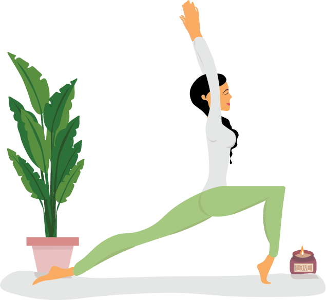

|  |
In today's fast-paced world, it's easy to get caught up in the chaos and forget to take care of yourself. However, self-care is essential for our overall well-being, and neglecting it can lead to burnout, anxiety, and even physical illness. In this article, we'll explore the importance of self-care and offer tips and strategies for nurturing your body, mind, and soul.
What is Self-Care?
Self-care is any activity that we do deliberately to take care of our mental, emotional, and physical health. It's a broad concept that encompasses a range of practices, from simple everyday habits like eating well and getting enough sleep to more indulgent activities like taking a spa day or going on a vacation. The key is to prioritize our own needs and make time for activities that promote our well-being.
Why is Self-Care Important?
Self-care is essential for maintaining a healthy and balanced life. When we neglect our own needs, we become vulnerable to stress, anxiety, and other mental health issues. We also put ourselves at risk for physical illnesses like heart disease and diabetes. Taking care of ourselves allows us to recharge our batteries, reduce stress, and improve our overall quality of life. It also sets an example for others in our lives, showing them that it's okay to take care of ourselves and prioritize our own needs. Tips and Strategies for Nurturing Your Body, Mind, and Soul:
First and foremost, practicing self-care is a crucial step toward improving your mental health. This includes taking care of your physical, emotional, and mental needs. Make sure to eat a healthy diet, establish a skincare routine, exercise regularly, and meditate. Incorporating self-care into your routine can positively impact your mental health and overall well-being.
Getting enough sleep is one of the most important things you can do for your mental and physical health. Aim for 7-9 hours of sleep per night and establish a regular sleep schedule. Try to go to bed and wake up at the same time every day, even on weekends. This helps regulate your body's internal clock, making it easier to fall asleep and wake up naturally. Sleep is when our body and brain repair and restore themselves, allowing us to function at our best during waking hours. However, many of us neglect sleep, often sacrificing it for work, social activities, or other responsibilities. Prioritizing sleep may require some adjustments to your daily routine, but the benefits are worth it. With better sleep, you'll have more energy, improved focus, and better overall health.
Eating a balanced and nutritious diet is another crucial aspect of self-care. Make sure to include plenty of fruits, vegetables, whole grains, and lean proteins in your diet. Proper nutrition fuels our body and mind, providing us with the energy and nutrients we need to function at our best. Whole foods like fruits, vegetables, whole grains, and lean proteins are rich in vitamins, minerals, and fiber, providing our body with the essential nutrients it needs to function properly. Processed foods are often high in salt, sugar, and unhealthy fats, and lack the essential nutrients our body needs. Limit your consumption of processed foods and focus on whole, natural foods instead. Drinking enough water is essential for our overall health. Aim for at least eight glasses of water a day, and more if you are physically active or live in a hot climate. By prioritizing nutritious, whole foods, and listening to your body's needs, you can fuel your body and mind with the nutrients they need to function at their best.
Regular exercise is an essential aspect of self-care that can have a significant impact on your physical and mental health. Whether you prefer to hit the gym, go for a run, or take a yoga class, finding an activity you enjoy and making it a regular part of your routine can help you reduce stress, boost your mood, and improve your overall well-being. Practice Mindfulness is the practice of being present in the moment and paying attention to your thoughts and feelings without judgment. Meditation, yoga, and deep breathing exercises are all great ways to cultivate mindfulness.
Unplugging and disconnecting from technology is an essential aspect of self-care in today's digital age. Social media and other forms of technology can easily consume our time and attention, leading to stress, anxiety, and a sense of being overwhelmed. Therefore, taking regular breaks from technology and spending time in offline activities can help promote mental and emotional well-being. It's important to remember that technology is a tool, and like any tool, it should be used in moderation. By taking regular breaks from technology and engaging in offline activities, you can enhance your overall well-being and find greater balance in your life.
Taking care of yourself is not just about meeting your basic needs but also about indulging in activities that bring you joy and relaxation. It is important to make time for self-indulgence and treat yourself regularly. This could involve anything from a spa day to reading a good book or indulging in your favorite hobby. Treating yourself does not have to be an extravagant activity that breaks the bank. It could be as simple as taking a relaxing bath or having a movie night with friends. The key is to do something that makes you feel good and allows you to unwind. It's important to remember that self-indulgence is not a guilty pleasure or a selfish act. It's an essential part of self-care that allows you to recharge your batteries and reduce stress. When you take care of yourself, you become better equipped to take care of others and contribute positively to the world. So, don't forget to treat yourself and make self-indulgence a regular part of your self-care routine.
Self-care is not just about pampering yourself with luxurious activities or indulging in your favorite hobbies. It's also about taking responsibility for your well-being and making intentional choices that promote your physical, mental, and emotional health. This can involve setting boundaries, saying no to activities that drain your energy, and prioritizing activities that make you feel good. Self-care is different for everyone, and it's important to explore different activities and find what works best for you. Consistency is key when it comes to self-care, and making small changes to your daily routine can have a big impact on your overall well-being over time. Remember that self-care is not selfish